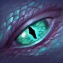
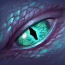

COREVERN
Core Winter Wyvern
Picking
Why Wyvern
• Add to that
 Arctic Burn's
underrated potential as a physical steroid: not only does it grant
Wyvern the longest attack range in the game, it also grants her
the lowest attack point. Without much farm she can turn into a
potent semi-carry, abusing her long range and slows to kite targets
better than any hero in the game.
Arctic Burn's
underrated potential as a physical steroid: not only does it grant
Wyvern the longest attack range in the game, it also grants her
the lowest attack point. Without much farm she can turn into a
potent semi-carry, abusing her long range and slows to kite targets
better than any hero in the game.
 is
is among the highest damage per second flash-farming and pushing
AOE nukes in the game:
• If given the space, she has the potential to safely farm even the
most dangerous lanes and itemize however the team needs—for either
damage, control or defensive items—all with equal aptitude.
is
is among the highest damage per second flash-farming and pushing
AOE nukes in the game:
• If given the space, she has the potential to safely farm even the
most dangerous lanes and itemize however the team needs—for either
damage, control or defensive items—all with equal aptitude. and
Winter's Curses —
both long-range spells but which can sometimes be wasted on an
underfarmed Wyvern who gets caught out. With a core Wyvern, the point
is to use your farm to make sure that never happens. You
have no excuse for not landing the perfect Curse and Embrace.
and
Winter's Curses —
both long-range spells but which can sometimes be wasted on an
underfarmed Wyvern who gets caught out. With a core Wyvern, the point
is to use your farm to make sure that never happens. You
have no excuse for not landing the perfect Curse and Embrace.
Synergy & Counters
Best Teammates
If you're looking to open a draft with a Wyvern pick, Dark Seer is a perfect combo pick both because of the draft ambiguity the combo creates and their skill combos. Dark Seer enjoys the dual slows coming from Arctic Burn and Splinter Blast to run people down, plus the Vacuum into Winter's Curse followed by Wall of Replica is DEVASTATING. Meanwhile, a Wyvern/Dark Seer opening always leaves you with the ability to flip Wyvern from a support to a mid position— definitely the biggest potential benefit of the Corevern build.
Yeah, sure—Wyvern is also a pretty good counter to Troll. But as far as core Wyvern is concerned, Troll ult is one of the best damage steroids she can get. Free attack speed plus a tank to play off of Cold Embrace and Curse. Beastmaster fulfills a similar role (as do Ogre, Invoker, and Arc Warden) but don't fit into the Draft with Wyvern quite as well. This combo as a 1/2 can seriously control physical hard carries.
As far as supports go, few buff Wyvern's offensive capabilities like AA does. Ice Vortex can amplify Splinter Blast during the laning stage, and later on Ice Blast onto Winter's Curse is an easily won teamfight. Picking the combo early probably isn't advised, but if you do the enemy may assume you've just picked your two supports, leaving you an opening to take advantage of.
Phoenix is perhaps the single best wombo combo a Wyvern can hope for—the Phoenix Supernova into Winter's Curse: Moltres and Articuno. Wyvern mid with Phoenix offlane is a fairly risky combo due to their low armor, but could definitely give your team a strong early game.
Drow lineups are considered very risky these (6.84) days, but this is a totally unexplored and I think very strong combo. Safelane Drow with early aura points to secure last-hits for Wyvern and another ranged core can lead to some very snowbally early pushing. Drow is inherently squishy and vulnerable, both of which Wyvern can supplement via Embrace and Curse respectively.
Oracle is in a weird place right now, but as far as defensive supports go there's really not much competition as far as synergy with Wyvern goes. Fate's Edict plus Cold Embrace makes an allied hero completely invulnerable and heals them, allowing Oracle to save his ultimate for that clutch dispel or to drop a heal bomb. His strong ranged harass would pair nicely with the aforementioned Drow combo too.
Worst Matchups
Viper is a NASTY hero to lane against as practically anyone, and Wyvern is no exception. His high base damage will force you to attempt some CSing with Splinter Blast before level 3, which is usually only reserved for a lane you're far ahead or behind in. Viper's potent slows can ruin your escape plan if it's "FLY OVER THOSE TREES" or "FLY OVER THAT CLIFF". Lastly, Viper is an annoying target to Curse, since his orb won't affet his allies if he's a secondary target, and he's generally too tanky to burst down during Curse if he's the primary target.
Leshrac wrecks all but the strongest mids, and while Wyvern may be a good core, she's not going to far all that well against our friend the glowing pony. In pubs you'll find the matchup winnable, but as skill levels rise the matchup favors Leshrac more and more, since you're a sitting duck for stuns during Cold Embrace and it also doesn't block Leshrac's most potent spell, Lightning Storm. The only silver lining here is that if you play defensively and remain somewhat far back, a Wyvern with Soul Ring can safely sustain in lane against Leshrac indefinitely while farming with Splinter Blast. She may not get as much CS as normal and lose some EXP while backing to heal with Embrace, but with proper play Wyvern should avoid dying.
Lina is the other most devastating meta mid against Wyvern, since her high spell damage in lane and longgg attack range give her a significant advantage even in matchups of equal skill. Laguna Blade goes straight through Cold Embrace, even without Aghanim's, thus you really need to watch who you heal during counter-ganks. A clever Wyvern can outmanuever the Lina during the mid-game by using Arctic Burn and initiating from interesting angles, but, in general, just having a Lina on the enemy team will always make your life harder.
As with any intelligence hero, Wyvern gets gutted when you start taking her intelligence away. Core Wyvern relies on her Soul Ring/Cold Embrace combo to maintain a health/mana balance in lane, and this matchup in particular really throws that off. To counteract an OD pick, supplement your build with a first-item Bottle and use the fact that you can nuke the creep wave while OD cannot to abuse runes and push the wave under his tower around the 1:50...3:50...etc mark.
This tidbit is less about the lane matchup with Storm and more about the teamfights later in the game, where Storm's extreme mobility begins to really impede Wyvern if she's behind. If Wyvern can get far enough ahead to pick-up items like Blink or Orchid that allow her to hunt the Storm that's one thing, but Storm Spirit tends to snowball hard and early thanks to jungle stacks and an aggressive laning stage. Corevern can contest him in lane thanks to her superior nuking power and range, but even one slip-up and you're looking at a long climb back.
Silencer is a terrifying opponent both in lane and in late-game teamfights—a fact that pretty much every hero must face. Wyvern is not especially vulnerable, since she can counterplay Last Word by using Cold Embrace on herself, but the Glaives harass is especially hard to deal with. Your best hope is that he doesn't burn too much of your mana with Curse, allowing you to punish him when he gets near creeps. Late-game, attempt to counterplay the Silencer by initiating on him, rather than the other way around.
Strong Against
Besides the fact that Splinter Blast dominates clumped up enemies (despite the Meepo's increased magic resist), you can never discount the fact that Wyvern's ultimate becomes the "Hey mepo, kill urself" button in Meepo games. If your enemy is brave enough to pick Meepo anything but last, he deserves to lose.
When Wyvern was added to the game, everyone knew one thing about her: she counters physical damage hard. PA is the one hero archetypal of this effect—if your enemy picks Phantom Assassom and Wyvern is still in the hero pool, it's pretty much a must pick. Cold Embrace destroys the PA initiation, and by extension any hero with a similar effect (Windranger, Clinkz, Ursa).
Aaaand the other hero that Wyvern completely neuters—although not as completely as when the slow from Arctic Burn went through magic immunity. Instead, Wyvern is now relegated to just nullifying Omnislash with one skill point, and stunning you through immunity any time you go in otherwise. There's really only one counterplay for a team with Juggernaut looking to avoid getting wrecked by Curse: Linken's Sphere. Lotus Orb is pretty good against Wyvern too, but your team still gets Cursed.
Back in 6.83 I started running this build when Sniper was popular, and Wyvern was even stronger. The Sniper vs. Wyvern matchup is surprisingly one-sided mid—in favor of the Wyvern. This advtange extends the whole game, as I found through experience, thanks largely to the fact that you can out-Sniper the Sniper due to your longer range (1000 vs 950), free Eye of Skadi effect, and significantly better flash-farming ability. The BKB-piercing disable doesn't hurt either. Or the heal to save yourself. Or the fact that you can come at him over trees. It's really not even a winnable matchup for the Sniper if you play it right, he should be relegated to farming from his high-ground and hiding.
Along with PA, Sven is perhaps the nastiest hero to catch in a Winter's Curse. Watching the Rogue Knight go rogue and bash one of his allies' heads in is always so enjoyable. Make sure and wait for him to pop God's Strength before Cursing one of their squishy supports.
While the SF versus Wyvern matchup mid is actually fairly even, late-game it really begins to favor the Wyvern if she keeps up her farm. Shadow Fiend seriously relies on his BKB—sometimes to ult or sometimes just to hit people—but there's really no way he should be getting an ult off against Wyvern. Hang back until the Shadow Fiend goes in, then turn the fight by healing whoever he went on and stopping his ult with Curse. In lane, just remember not to stand still for a Cold Embrace while in range for Razes.
Skilling
→
At level 1,
→
At level 2,
→
At level 3,
→
At level 4,
→
At level 5,
At level 6,
→
At level 7,
→
At level 8,
→
At level 9,
→
At level 10,
At level 11,
→
At level 12,
→
At level 13,
→
At level 14,
At level 15,
At level 16,
Building
Core
As a mid-laner, just one set of tangos will keep you healed up until your Soul Ring arrives. Sometimes as an offlaner you may need additional regen in the first 5 minutes.
The most important thing for laning Wyvern to consider is her pathetic damage at level 1. A starting Null Talisman is a worthwhile investment if you'll be trying to last-hit in lane at all.
Brown boots are usually sufficient on their own, though as you'll see in the alternate items to the right there are occasions that call for Treads or Phase boots.
Maelstrom accelerates Wyvern's farm like no other item, allowing her to flash farm waves and camps by using Maelstrom to mop up the slivers of health remaining on groups of creeps after Splinter Blast. It remains an efficient damage item all game long and adds a ton of aoe damage to your teamfight contribution.
Wyvern may be squishy, but with 800+ range on her whole kit she really shouldn't be getting hit. Mask of Madness is not only an extremely efficient source of attack speed—granting an additional 3-5 attacks during Arctic Burn—but it's also a useful source of movement speed, which stack with your next core item...
While rushing Maelstrom may be a slightly more stable build, the Necrobook rush has even more high-ground and snowball potential, thanks to Beastmaster-style Winter's Curse and Necrobook ganks. The cheaper components of Necrobook mean that you're less likely to lose gold if any of your early rotations end in a death, though the best situation would be if you can sit in lane until taking the enemy's T1 tower with your Necro 1.
Sometimes the marginal benefit of 1250 gold for Necrobook 2 or 3 would be less than the potential benefit of saving up for a Maelstrom. Consider sandwiching smaller items like Maelstrom, Blink Dagger, Urn, etc in between your Necronomicon upgrades.
By the time you get Necrobook 3, you should have made several successful rotations. Once you've completed Necrobook 3 your goal is to make sure Winter's Curse and Necrobook are always on cooldown. Time to push!
Wyvern is a slow hero—not to mention she needs to be at every fight she can if you're bothering to make her a core. For these reasons alone Boots of Travel are game changers on Winter Wyvern, but especially in light of her abilities as a flash-farmer and split-pusher. The 70-second cooldown on Teleport Scroll just won't cut it if you're going to put heavy pressure on the enemy as a Corevern.
Picking up 1-2 extra Sage's Masks can really help with your early-game mana management—plus they can be used to build several other useful items (especially if you're going Orchid later). If your game starts to look bad, going for some of these small, incremental items can help you claw your way back into the game.
OoV's 4% slow does, in fact, stack with that of Arctic Burn. It may not sound like much, but the added harass and kiting-potential is especially deadly against melee heroes 1v1, and also aids in zoning out enemy supports when off-laning.
Are you in a tightly contested lane? Phase boots guarantee you'll get plenty of CS—plus they help with your mobility—but you should only purchase them when the 840 gold investment is going to pay for itself. If you aren't getting these immediately after Soul Ring, then don't bother.
Dying a bit too much and still sitting on brown boots? Treads are a convenient way to add some survivability, not to mention efficiency, without using up a whole item slot. Get these boots when you're behind.
Extension
Utility
Blink is key to getting off those clutch Curses and Cold Embraces—but in games where your team needs carry it can be preferable to continue straight into more damage items instead. Blink is never a bad idea, however, especially if you can save your own life with it even once by blinking out of a bad situation. Be sure to make the most of your Blink reveal by catching your enemies out with a big surprise initiation.
Even in games when you pick up Maelstrom and Mask of Madness first, a late Necrobook can still have a great impact, especially when pushing high-ground. Don't forget that Necro serves as a counter to both invisibility and mana-reliant heroes (Wraith King, Brew, CK).
This is it. Refresher is the single best item on Wyvern. Double Winter's Curse is nearly guaranteed to win a teamfight on its own, especially in games with farmed enemy physical damage cores. You should default to Refresher when all else fails, especially because it combos so well with other beneficial active items like Sheepstick, BKB, etc.
Orchid is the best intelligence and damage-dealing item Wyvern can get, plus the silence effectively doubles your lockdown. Threaten a gank with Orchid and then Winter's Curse everyone when their friends show up to counter-initiate.
By far the most potent disable you can get from an item, Scythe or Sheepstick is the gold-standard for teamfight control. If you end up needing more disable than Refresher+Curse alone can throw down, this is your next stop.
While BKB may not be a particularly fun item, it's particularly gratifying to use on Wyvern because Wyvern can exert so much control while being immune to magic herself. If the enemy has particularly nasty silences or otherwise BKB-removable disables, then BKB is the only way to power through and keep your team going.
Carry
If you really want to play Wyvern as a carry, Daedalus is the first step. No other item will give you as much bang for your buck—and there are few things scarier than a Corevern spitting 500+ damage crits at 1000 range. Once you have Daedalus, all you need is attack speed.
Most heroes only purchase MKB to counter evasion heroes, but Wyvern is rare hero who has good reason to purchase it otherwise. Being able to stun enemies with the MKB mini-bash 1000-units down the field is a very valuable ability, especially against, for example, lineups with channeling abilities. Don't underestimate the +15 attack speed either.
Night vision is already a specialty of Wyvern's thanks to the bonus vision from Arctic Burn, but with Moon Shard added she can initiate from an even longer distance at night. Moon Shard provides the highest attack speed in a single slot with none of the downsides of Mask of Madness—making it by far the best option for affordable damage after Daedalus.
In games where killing structures quickly is going to be a priority, Wyvern can offer more to the team by itemizing tanky and participating more aggressively in pushes. While Wyvern may have a sick strength gain, even a platemail-based item like Cuirass won't make her strong enough to truly "tank".
Mjollnir would be a great item—if Wyvern were a hero that tries to get hit. Wyvern does make good use of the attack speed, but the active ability is usually wasted unless you have a teammate like Axe to throw the static charge on, and thus Mjollnir is not usually the most cost effective item choice until you're nearly six-slotted.
There's really no other stats item Wyvern would want, plus the Skadi effect can be extremely effective at kiting enemy carries. Wyvern already excels against enemy physical DPSers, but with Skadi's additional 35% movespeed slow there's little they can do to escape once they come in range.
Support
Like all the other support items listed here, Glimmer Cape falls into the category of "items Wyvern would prefer not to buy". While she can make better use of it than perhaps any other hero, it doesn't do much for her damage output—the side of the hero we're interested in with this build. Get Glimmer if your team needs it, not as a default choice.
Force Staff probably won't be used to initiate much, but it can certainly be used to save allies whom you have Cold Embraced. Your role as a Corevern is a playmaker, and any item like Force Staff that can help you accomplish that is fair game.
Pipe is the gawky older cousin to Glimmer Cape. You shouldn't need a Pipe most games, but in games where you do Wyvern is a natural carrier for it, as getting burst down by magical damage is pretty much Wyvern's worst fear.
Veil shouldn't be one of your most common item pickups, but on a game-by-game basis try to notice when your teammates can make good use of the amplified magic damage. If so, then Wyvern makes a fine Veil carrier, as she'll often be in a position to both build it from her early Null Tally and to cast it in fights.
Once again Wyvern makes an excellent Lotus carrier because she intends to stay out of the fight, and will thus be positioned to cast it on allies. The ability to dispel debuffs is highly underrated and can be seriously fight-winning on its own.
In cases where Winter's Curse becomes an important centerpiece in her team's teamfights, Wyvern herself may become the target of devastating single-target skills like Hex, Fiend's Grip, Doom, etc. Games like these are when Linken's Sphere comes into play, or occasionally when a carry on your team needs extra protection.
Laning
TI5 Performance
• Despite her powerful skills, Wyvern fared poorly at TI5, with an overall winrate of only 38%. EG (4-2) and EHOME (6-2) had the best records with the hero.| Role | Farm | Games | Wins | Losses | Winrate |
|---|---|---|---|---|---|
| 4 | 3 | 3 | 1 | 2 | .33 |
| 4 | 4 | 22 | 5 | 17 | .22 |
| 4 | 5 | 5 | 2 | 3 | .40 |
| 5 | 3 | 4 | 2 | 2 | .50 |
| 5 | 4 | 7 | 3 | 4 | .42 |
| 5 | 5 | 11 | 7 | 4 | .63 |
Pick Rate by Role
• With such a low winrate, can captains really justify Wyvern as a continued tier-1 pick/ban? Adding core Wyvern to your arsenal gives you the safety to draft her early without giving away any information about lanes.• As players start to realize just how versatile Wyvern can be, I predict she will see play on every role, from offlane to carry. Her combination of reliable early farming into late-game teamfight control is beneficial to practically any team.